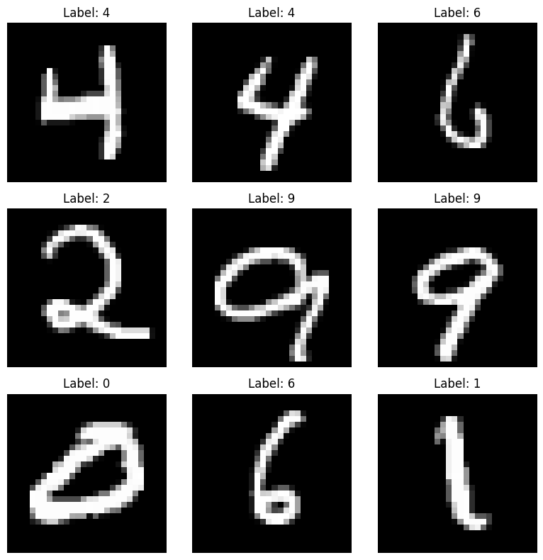
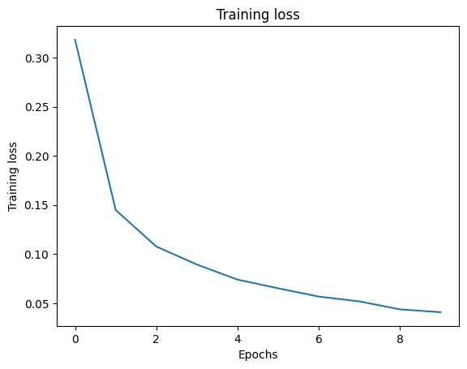
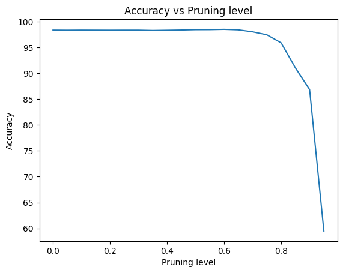

Neural networks have come a long way, especially deep models with
lots of neurons. Most of these models have a fixed structure, meaning we
decide on the number of neurons in each layer before training and then
tweak the parameters based on the dataset.
However, there's a new approach in deep learning that's all about
dynamic networks. Unlike the fixed ones, dynamic
networks not only learn parameters during training but can also change
their structure as they learn.
This shift to dynamic networks has some advantages. It makes training
more efficient and eliminates the need for manual tweaking of
architectures. Dynamic networks can adapt to new information and tasks
easily. They can even add or remove parts like neurons and connections
as needed.
This notebook is about understanding dynamic networks, focusing on a
specific idea called structural pruning. This process
involves selectively removing connections or neurons, showing a bit of a
concept called neurogenesis. Neurogenesis is like adding new elements
within existing layers. Structural pruning, as you'll see in this
notebook, is an example that highlights how dynamic networks can keep
evolving and improving.
Artificial Neural Networks (ANNs)
First, let's make a short reminder about Artificial Neural
Networks.
Artificial Neural Networks (ANNs) represent a class of computational
models inspired by the neural architecture of the human brain. Operating
as interconnected nodes organized into layers, ANNs leverage a
combination of linear and non-linear transformations to capture complex
relationships within data.
At their core, ANNs consist of an input layer, one or more hidden
layers, and an output layer. Each connection between nodes is associated
with a weight, and the network learns by adjusting these weights during
a training phase. The training process involves minimizing a predefined
loss function, typically through optimization algorithms like stochastic
gradient descent (SGD).
Activation functions introduce non-linearities into the network,
enabling the modeling of intricate mappings between inputs and outputs.
Common activation functions include Rectified Linear Units (ReLU),
Sigmoid, and Hyperbolic Tangent (tanh), each influencing the network's
capacity to capture and propagate information through the layers..
Training large-scale ANNs requires careful consideration of
hyperparameters, such as learning rates, batch sizes, and regularization
techniques to prevent overfitting.
You can find more information and detail on this
github
Time to code !!
Let's make a little ANN to classify the MNIST
dataset. The MNIST dataset is composed of a collection of
handwritten digit images, MNIST stands as a foundational resource for
training and evaluating algorithms designed to recognize and classify
digits from 0 to 9. Each image in the MNIST dataset is a grayscale,
28x28-pixel representation of a handwritten digit.
We will use Pytorch but you can do the same thing with
Keras
First, let's load the data and print 9 random figures :
# Import the necessary librariesimport torchimport pandas as pdimport numpy as npimport matplotlib.pyplot as pltimport randomimport osfrom tqdm import tqdmfrom torch.utils.data.sampler import SubsetRandomSamplerfrom torchvision import datasets, transformsfrom torch.utils.data import DataLoader, Datasetfrom torch import nn, optim
# We need a, image transform to convert to Tensor and normalize with a mean of 0.5 and standard deviation of 0.5transform = transforms.Compose([ transforms.ToTensor(), transforms.Normalize((0.5,), (0.5,)) ])# Download the Train and Test settrainset = datasets.MNIST('.', train=True, download=True, transform=transform)testset = datasets.MNIST('.', train=False, download=True, transform=transform)
# Set up a 3x3 grid for displaying the imagesfig, axes = plt.subplots(3, 3, figsize=(8, 8))axes = axes.flatten()# Get 9 random indices from the training setrandom_indices = np.random.choice(len(trainset), size=9, replace=False)# Display the 9 random imagesfor i, idx inenumerate(random_indices): image, label = trainset[idx] image = image.numpy().squeeze() axes[i].imshow(image, cmap='gray') axes[i].set_title(f"Label: {label}") axes[i].axis('off')plt.tight_layout()plt.show()

# Parameters for the dataloaderbatch_size =64valid_size =0.2
# Split the training set into training and validation setsnum_train =len(trainset)indices =list(range(num_train))np.random.shuffle(indices)split =int(np.floor(valid_size * num_train))train_idx, valid_idx = indices[split:], indices[:split]# Define the samplers for obtaining training and validation batchestrain_sampler = SubsetRandomSampler(train_idx)valid_sampler = SubsetRandomSampler(valid_idx)
# Train the modellist_loss = []for i in tqdm(range(nb_epochs),desc="Training of the ANN"): model_ann.train() running_loss =0for images, labels in train_loader: optimizer.zero_grad() output = model_ann(images) loss = criterion(output, labels) loss.backward() optimizer.step() running_loss += loss.item()# print(loss) list_loss.append(running_loss/len(train_loader))# print(f"Epoch nb {i+1}. Training loss: {running_loss/len(train_loader)}")
Training of the ANN: 0%| | 0/10 [00:00<?, ?it/s]
Training of the ANN: 100%|██████████| 10/10 [05:41<00:00, 34.12s/it]
# Plot the training lossplt.plot(list_loss)plt.xlabel('Epochs')plt.ylabel('Training loss')plt.title('Training loss')plt.show()

# Test the modelmodel_ann.eval()correct =0total =0with torch.no_grad():for images, labels in valid_loader: output = model_ann(images) _, predicted = torch.max(output, 1) total += labels.size(0) correct += (predicted == labels).sum().item()torch.save(model_ann.state_dict(), 'model.pt')print(f"Accuracy of the model on the validation set: {100* correct / total:.2f}%")
Accuracy of the model on the validation set: 97.51%
Structural pruning
Now that we've established our neural network, consisting of two
layers with 512 neurons each, we can explore techniques to prune it
effectively. Pruning aims to streamline the network, reducing training
and validation time without compromising performance. Among various
pruning methods, two stand out as the most commonly used:
Weight pruning
Neuron pruning
Weight pruning involves removing connections between neurons by
setting the corresponding weights to zero. Conversely, neuron pruning
entails eliminating entire neurons by zeroing out all connections
associated with the neuron being pruned. The distinction between these
methods is illustrated in the image below.
We are going to see how weight pruning works
Weight pruning
In the technique of weight pruning, we selectively remove connections
within a neural network by setting individual weights in the weight
matrix to zero. This process effectively sparsifies the network,
reducing its complexity and potentially improving its efficiency during
both training and inference stages.
The mechanism of weight pruning involves ranking the individual
weights in the weight matrix W
based on their absolute value. By doing so, we obtain a sorted list of
weights.
To achieve a desired level of sparsity, denoted as k%, we then proceed to set to zero
the smallest k% of weights
from the sorted list. This corresponds to deleting a certain percentage
of connections in the neural network, effectively reducing the number of
parameters and connections within the model.
The degree of sparsity, represented by k%, can be adjusted based on
specific requirements or constraints. Higher values of k% result in more aggressive
pruning, leading to greater sparsity but potentially at the expense of
model performance. Conversely, lower values of k% preserve more connections and
parameters, thus retaining more of the network's original capacity.
Now that we know how the weight pruning works, we can then write a
pseudo code to implement it in Python :
for l in layers(model):
Compute absolute values of all weights in W.
Sort weights in ascending order based on their absolute values.
Set to zero the smallest k% of weights.
Replace the weight by the pruned weights in the matrix W.
We will rewrite the code implemented in Pytorch to understand how it
works. We will use the useful fonctions and the skeleton class that you
can find here.
# Skeleton of the pruning classfrom torch.nn.utils.prune import BasePruningMethod# Some useful fonction to validate the pruning amount # If you want to see how they work, you can look at the link right above to have the full codefrom torch.nn.utils.prune import _validate_pruning_amount_init, _validate_pruning_amount
To find the weights that need to be set at 0, we write a fonction
that return the indices of the k first elements based on their
values.
def weights_to_shut(input_tensor, k):# Flatten the input tensor flattened_input = input_tensor.flatten()# Use torch.sort to get the indices of the top k elements sorted_indices = torch.argsort(flattened_input)# Take the top k indices topk_indices = sorted_indices[:k]return topk_indices
class Weight_Pruning(BasePruningMethod):"""Prune (currently unpruned) units in a tensor by zeroing out the ones with the lowest L1-norm. Args: amount (float): quantity of parameters to prune. It should be between 0.0 and 1.0 and represent the fraction of parameters to prune. """ PRUNING_TYPE ="unstructured"def__init__(self, amount):# Check range of validity of pruning amount _validate_pruning_amount_init(amount)self.amount = amountdef compute_mask(self, t, default_mask):# t is the tensor to prune, meaning the weights of the layer# Check that the amount of units to prune is not > than the number of# parameters in t tensor_size = t.nelement()# Compute number of units to prune: amount * tensor_size nparams_toprune =round(self.amount * tensor_size)# This should raise an error if the number of units to prune is larger# than the number of units in the tensor _validate_pruning_amount(nparams_toprune, tensor_size)# Create mask containing only ones mask = default_mask.clone(memory_format=torch.contiguous_format)if nparams_toprune !=0: # k=0 not supported by torch.kthvalue # Compute the indices to zero out indices_at_0 = weights_to_shut(torch.abs(t).view(-1), k=nparams_toprune)# Set the elements to zero mask.view(-1)[indices_at_0] =0return mask@classmethoddefapply(cls, module, name, amount, importance_scores=None):r"""Add pruning on the fly and reparametrization of a tensor. Adds the forward pre-hook that enables pruning on the fly and the reparametrization of a tensor in terms of the original tensor and the pruning mask. Args: module (nn.Module): module containing the tensor to prune name (str): parameter name within ``module`` on which pruning will act. amount (int or float): quantity of parameters to prune. It should be between 0.0 and 1.0 and represent the fraction of parameters to prune. importance_scores (torch.Tensor): tensor of importance scores (of same shape as module parameter) used to compute mask for pruning. The values in this tensor indicate the importance of the corresponding elements in the parameter being pruned. If unspecified or None, the module parameter will be used in its place. """returnsuper().apply( module, name, amount=amount, importance_scores=importance_scores )
import torch.nn.utils.prune as prunelist_accuracy_weight = []for i in tqdm(range(20)): model = ANN(input_size, output_size, hidden_layer_1, hidden_layer_2) model.load_state_dict(torch.load('model.pt')) prune_l1 = Weight_Pruning(amount=i/20)for name, module in model.named_modules():ifisinstance(module, nn.Linear): prune_l1.apply(module, name='weight', amount=i/20)# Test the model model.eval() correct =0 total =0with torch.no_grad():for images, labels in valid_loader: output = model(images) _, predicted = torch.max(output, 1) total += labels.size(0) correct += (predicted == labels).sum().item() list_accuracy_weight.append(100* correct / total)
100%|██████████| 20/20 [01:04<00:00, 3.24s/it]
Let's plot the accuracy of the validation set against the sparsity to
see how removing connections impact the performance of our neural
network
# Display the accuracyplt.plot(1/20* np.arange(20), list_accuracy_weight)plt.xlabel('Pruning level')plt.ylabel('Accuracy')plt.title('Accuracy vs Pruning level')plt.show()

As observed, the act of pruning connections has a negligible impact
on the model's performance until approximately 80% sparsity is achieved,
indicating the removal of a significant portion of connections. This
technique affords us the opportunity to substantially enhance
performance, showcasing its efficacy in optimizing the model's
efficiency without compromising its effectiveness. So we could change
our model to a one with only 80% of neurons it will be barely the same
performance.
Neurogenesis
Now that we have seen how a dynamic neural network works, we can
better understand how the neurogenesis works. We consider neurogenesis
through the following dimensions about adding neurons:
When: Standard learning algorithms naturally
discretize the learning process into steps, so neurogenesis may occur at
any step of training.
How many: When neurogenesis is triggered at a step,
multiple neurons can be added at once.
Where: In standard ANN architectures, this amounts
to which layer neurogenesis occurs in.
How: The fan-in and fan-out weights and bias of
each new neuron must be initialized.
Existing neurogenesis research primarily focuses on
when and how to initialize new
neurons. Some studies delay neurogenesis until later in training, while
others advocate for its occurrence throughout training. Recent
approaches often use gradient-based methods to initialize new neurons,
either by splitting existing neurons or creating entirely new ones based
on gradient norms. Neurogenesis expands the parameter search space and
can either preserve the network's function or alter it. To unify these
approaches and study their components, we will see an a framework for
neurogenesis strategies.
Framework
The neurogenesis framework divides neurogenesis strategies into
triggers, which are heuristics that determine when, where, and how many
neurons to add, and initializations, which determine how to set their
weights before training them. We present the basic framework below.
After every gradient step, for each layer, the trigger is evaluated to
determine if and how many neurons to add, and then the initialization is
used to add these new neurons. Since the trigger is assessed after each
gradient step, the decision of when to add neurons is based on non-zero
outputs from the trigger. Similarly, the decision of where to add
neurons is addressed by evaluating the trigger on each layer
independently.
Neurogenesis framework
Procedure Neurogenesis(Trigger, Initialization, initial ANN 𝑓)
while 𝑓 not converged do
Gradient descent step on current existing weights
for each hidden layer 𝑙 do
if Trigger(𝑓,𝑙) > 0 then
Add Trigger(𝑓,𝑙) neurons using Initialization(𝑓,𝑙)
return trained 𝑓
Triggers
We will see three sources of information for trigger for neurogenesis
: neural activations, weights, and gradients. These triggers determine
if and how many neurons to add for each layer after each gradient
step.
Activation based : When constructing an
efficient network via neurogenesis, the aim is to add neurons that
introduce novel features to improve the direction of descent, reduce
empirical risk, or avoid redundancy. Thus, we need to measure how
different or orthogonal the post-activations are from each other. To
measure orthogonality of a layer, we use the 𝜖-numerical rank of the
post-activation matrix. For layer 𝑙 and 𝑛 samples generating the
post-activation Hl the effective
dimension metric may be estimated by: $$
\phi_a^{ED} (f,l) = \frac{1}{M_l} \bigg|\bigg\{\sigma \in
\text{SVD}\bigg(\frac{1}{\sqrt{n}} H_l\bigg)\bigg| \sigma > \epsilon
\bigg\}\bigg| $$ Where $\text{SVD}\bigg(\frac{1}{\sqrt{n}}
H_l\bigg)$ is the set of singular value of $\frac{1}{\sqrt{n}} H_l$, ϵ > 0 is a small threshold and
Ml is the
number of rows of the matrix Wl, equivalent
to the number of entries of the layer l. This metric estimates the
effective dimension of post-activation matrices, indicating potential
for adding new neurons when orthogonality is high and redundancy when
it's low. The addition of a new neuron increases the metric if its
activation is more orthogonal to others and decreases it if it's
redundant. The baseline metric value at network initialization guides
the process, aiming to maintain or increase it throughout training. The
number of neurons triggered is based on the difference between the
current metric value and a threshold, scaled by the current number of
neurons.
Now that we have a metric the goal is to preserve this initial metric
value throughout training, even as the layer expands. If new neurons
fail to increase the rank and decrease the metric value, neurogenesis
pauses until the rank improves through gradient descent. This baseline
value is multiplied by a threshold hyperparameter γa close to 1.
The number of triggered neurons is then : Tact(f,ϕa,l) = min (0,⌊Ml(ϕa(f,l)−γaϕa(f0,l))⌋)
where f0 is the ANN
at initialization and ϕa is the
orthogonality metric.
Weight based : We include weight matrix
orthogonality as a comparison to activation-based methods. The trigger,
Tweight
, is computed as in the two equations in the activation based but with
Wl instead
of Hl :
$$\phi_w^{ED} (f,l) = \frac{1}{M_l}
\bigg|\bigg\{\sigma \in \text{SVD}\bigg(\frac{1}{\sqrt{n}}
W_l\bigg)\bigg| \sigma > \epsilon \bigg\}\bigg|$$Tweight(f,ϕw,l) = min (0,⌊Ml(ϕw(f,l)−γwϕw(f0,l))⌋)
Gradient based : To investigate gradient-based
neurogenesis initializations within dynamic neurogenesis, we will use a
trigger based on the auxiliary gradient. This trigger assesses the
maximum increase in gradient norm attainable by adding k neurons to the lth layer as the sum of the largest
k singular values of the
auxiliary gradient matrix $\frac{\partial
L}{\partial z_{l-1}} h_{l-1}$. By comparing these singular values
with the gradient norms of all existing neurons in that layer over the
same dataset, we determine the number of neurons to trigger based on the
count of singular values exceeding the sum of gradient norms. $$ \phi_{grad} (f, L, l) = \frac{1}{M_l}
\bigg|\bigg\{\sigma \in
\text{SVD}\bigg(\frac{\partial{L}}{\partial{Z_{l+1}}}
H_{l-1}^{\text{T}}\bigg)\bigg| \sigma > \sum_{m=1}^{M_l} \bigg|
\bigg| \frac{\partial{L}}{\partial{w_{m}^{in}}}\bigg| \bigg|_F + \bigg|
\bigg| \frac{\partial{L}}{\partial{w_{m}^{out}}}\bigg| \bigg|_F
\bigg\}\bigg| $$ where L is the loss function if the
network, wmin
is the mth row
of Wl and
wmout
is the mth
column of Wl + 1,
respectively representing the fan-in and fan_out weight of the mth
neuron of the layer l. We
intuit this threshold creates neurons that could have initial gradients
significantly stronger than existing neurons and will be harder to
surpass as the layer grows, thus leading to convergence in layer
width.
Initializations
For the initialization of new neurons, we aim to minimize
computational overhead by leveraging information already computed for
the corresponding trigger in each method. Then, we introduce
function-preserving neurons that do not immediately alter the network
output or the activation of downstream layers. Our proposal suggests
that the role of initialization during training neurogenesis is to add
locally useful neurons to the triggered layer, which are subsequently
integrated into the network's functionality via gradient descent. We
assess the utility of these neurons based on activation, weights, and
gradients. Additionally, we standardize the weight norm of new neurons
to match that of existing neurons, simplifying subsequent
calculations.
Note : The suite of neurogenesis strategies all begin with NORTH,
that means Neural ORTHogonality for the initialization
Activation based : We present multiple
approaches for initializing neurons to achieve orthogonal
post-activations. However, due to the nonlinearity of neurons,
closed-form solutions are only available for a set of fan-in weights,
resulting in orthogonal pre-activations rather than post-activations.
These approaches generate candidate neurons and select those that
independently maximize the orthogonality metric of the post-activations
with existing neurons in the layer. The fan-out weights are initialized
to 0.
NORTH-Select : generate random candidate
neurons.
NORTH-Pre : generate candidate neurons
with pre-activations maximally orthogonal to existing pre-activations.
For n samples and Ml neurons in
layer l , a candidate’s fan-in
weights are w = (Hl − 1⊺)−1VZl′a⊺
where (Hl − 1⊺)−1
is the left inverse of the transpose of post-activations Hl − 1 for layer
l − 1, VZl′
is comprised of orthogonal vectors of the kernel of pre-activations
Zl, and
a ∈ ℝn − Ml
is a random vector resampled for each candidate.
As a baseline to these selection-based techniques,
NORTH-Random uses RandomInit as the
initialization strategy with random fan-in weights and zeroed fan-out
weights.
Weight based : The objective is to initialize
k new neurons with fan-out
weights set to 0, while the fan-in weights are designed to be orthogonal
to the existing weights in the layer. So, each new neuron is initialized
with fan-out weights of 0 and fan-in weights determined by projecting
random initial weights onto the kernel (null space) of the existing
weight matrix Wl : w = projker Wl(wi)
where $ \textbf{w}i \in \mathbb{R}^{M{l-1} + 1} $ are the
random initial fan-in weights from the base weight initialization and
the projection is computed using VWl′
, comprised of orthogonal vectors of the kernel.It is named
NORTH-Weight
Quick recapitulatif of all the trigger and
initialization
Strategy
Trigger
Initialization
NORTH-Select
Tact
Select
NORTH-Pre
Tact
Pre-activation
NORTH-Random
Tact
RandomInit
NORTH-Weight
Tweight
Weight
GradMax
Tgrad
GradMax
Firefly
Tgrad
Firefly
NeST
Tgrad
NeST
Experiments
We are now going to study the impact of the different trigger and
initialization methods detailed in Table 1 over a variety of tasks, with
dynamic schedules to study triggers and independently studying the
importance of initialization by also using fixed schedules. We are also
going to compare with static networks of various sizes to understand the
relative performance of networks grown with neurogenesis. Specifically,
we focus on MLPs on MNIST.
In our investigation of neurogenesis within dense MLP layers for
MNIST classification, we utilize networks with vectorized image inputs,
two hidden layers that grow via neurogenesis, and ten output neurons as
we just saw before. We explore dynamic strategies and isolate
initializations in preset growth schedules. Test accuracy and training
time are compared against final network size or schedule, depicted in
Figure 1, while Figure 2 illustrates layer widths over training for
dynamic schedules.
To better understand the impact of trigger versus initialization
methods, we compare different initialization approaches using fixed
neurogenesis schedules. We employ two predefined schedules: Linear and
Batched.
the Linear schedule adds one neuron per gradient
step.
The Batched schedule adds batches of neurons after
each gradient step.
Both schedules are characterized by initial and final layer widths.
We allow neuron growth for the first 75% of epochs.
The Linear schedule results in frequent, small
growth events as neurons are added one at a time. The
Batched schedule, on the other hand, has fewer, larger
growth events as neurons are added in regular intervals. We also compare
these schedules with a Medium Static network, which begins training with
the final size of the growing networks, containing 256 neurons per
hidden layer.
Figure 1
Figure 2
Dynamic neurogenesis reveals that NORTH* orthogonality-based methods
dominate the Pareto front of accuracy versus network size (the Pareto
front of accuracy represents the trade-off between achieving higher
accuracy and minimizing network size or complexity). These methods
leverage activation and weight orthogonality triggers, outperforming
gradient-based approaches like GradMax and NeST, despite the latter's
faster CPU implementation due to optimized deep learning libraries for
gradient descent. The triggers effectively converge toward smaller
networks, responding to questions of "When" and "How many" neurons to
add. NORTH* methods tend to converge toward networks with larger first
layers and smaller second layers, resembling patterns in hand-designed
networks. Preset schedules show that multiple NORTH* strategies
outperform static networks of similar final architectures, highlighting
the benefits of dynamically growing networks during learning. However,
NORTH-Pre slightly underperformed compared to less-informed approaches,
such as NORTH-Select and NORTH-Random, indicating the importance of
trigger selection in neurogenesis strategies.
Conclusion
NORTH* strategies enable the development of efficient networks that
achieve comparable performance to static architectures, and in some
cases even outperform them. Utilizing growth with informed triggers
leads to efficient networks as redundant neurons are less likely to be
created during the small network initialization and are not added by
NORTH* neurogenesis. Activation and weight orthogonality have been found
to be useful triggers for dynamic neurogenesis, along with weight
initializations of new neurons. These methods implicitly use gradient
information via network updates, thus potentially extending to
unsupervised and semi-supervised contexts where gradient information may
be unreliable. While neurogenesis triggers can be computationally
costly, NORTH* strategies have shown greater efficiency compared to
gradient-based methods in GPU experiments.
We present the NORTH* suite of neurogenesis strategies, comprised of
triggers that use orthogonality metrics of either activations or weights
to determine when, where, and how many neurons to add and informed
initializations that optimize the metrics. NORTH* strategies achieve
dynamic neurogenesis, growing effective networks that converge in size
and can outperform baseline static networks in compactness or
performance. The orthogonality-based neurogenesis methods in NORTH*
could be further used to grow networks in a variety of settings, such as
continual learning, shifting distributions, or combined synergistically
with other structural learning methods. Neurogenesis can grow network
architectures that dynamically respond to learning.